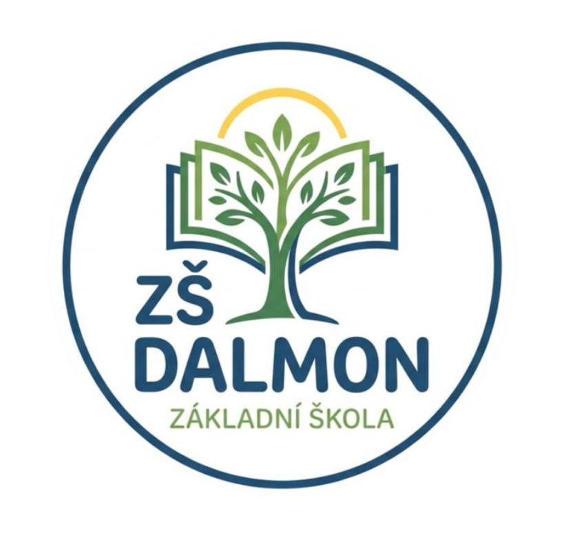

Jsme rodinná soukromá škola v Brně, kde propojujeme samostatnost Montessori s odpovědností Daltonského plánu.
ZŠ DalMon zajišťuje vzdělávání pro žáky 1. až 5. ročníku. Vytváříme podmínky, kde se každé dítě může učit vlastním tempem v atmosféře vzájemné úcty a pomoci.
Maximální celková kapacita celé školy.
Limitní počet dětí v jedné kmenové třídě.
Metoda výuky matematiky pro logické myšlení.
Zapojení do mezinárodní spolupráce a stáží.
Učení u nás nekončí ve třídě. Do výuky zapojujeme odborníky z praxe a rodiče prostřednictvím inspirativních workshopů.
Naše pedagogická koncepce chytře provazuje osvědčené reformní směry s tradiční výukou.
Učení probíhá prostřednictvím vlastní zkušenosti v takzvaném připraveném prostředí.
Výchova k odpovědnosti za vlastní učení a schopnost samostatně si organizovat práci.
Matematika postavená na objevování, logickém uvažování a hledání vlastních postupů.
Důraz na spolupráci, komunikaci a aktivní zapojení dětí do vzdělávacího procesu.
Kombinujeme pevný základ povinných předmětů s unikátními volitelnými moduly.
Český jazyk s důrazem na čtenářství a Angličtina hravou formou již od 1. třídy.
Hejného metoda pro radost z čísel a digitální gramotnost s důrazem na bezpečnost.
Všestranná tělesná výchova a pravidelné kurzy plavání od 1. třídy.
Žáci si volí konkrétní zaměření modulů, kde se potkávají děti napříč ročníky (1.–5. třída).
Zkoumání fauny, flóry, lidského těla a ekologie hravou formou.
Od klasické malby až po digitální design a tvorbu animací.
Tradiční řemesla, vaření, robotika a péče o školní zahradu.
Zajišťujeme stabilitu školy a nadstandardní materiální vybavení.
Školné pokrývá provozní náklady, které nejsou hrazeny ze státního rozpočtu.
Hradí 100 % platů všech učitelů, asistentů a vedení školy, stejně jako základní učebnice.
Dary od partnerů využíváme výhradně na modernizaci IT učebny a nákup digitálních technologií.
Mezinárodní projekty a stáže učitelů jsou plně hrazeny z evropských grantů.
Důraz klademe na vyváženost učení a pobytu na čerstvém vzduchu.
Nesrovnáváme děti mezi sebou, ale sledujeme jejich individuální posun a rozvoj.
Průběžné detailní zhodnocení v průběhu roku a komplexní výstup na konci každého pololetí při společné schůzce učitele, rodiče a žáka. Podává přesný a motivační obraz pokroku.
Tradiční známkování (stupně 1 až 5) je udělováno po každém pololetí na vysvědčení v plném souladu s vyhláškou MŠMT ČR.
Každé dítě si tvoří osobní portfolio svých nejlepších prací a projektů. Slouží k sebereflexi, ohlédnutí za vlastní prací a jasné vizualizaci osobního růstu.